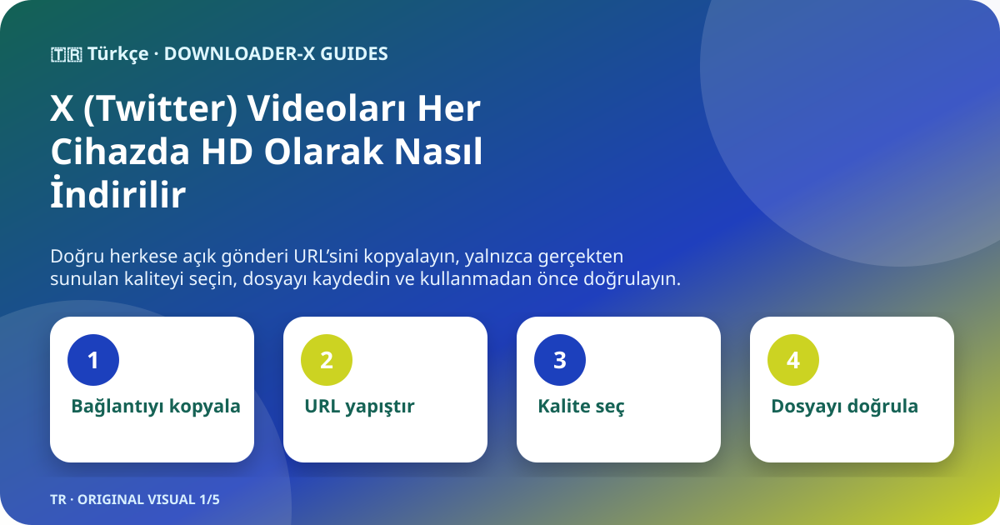
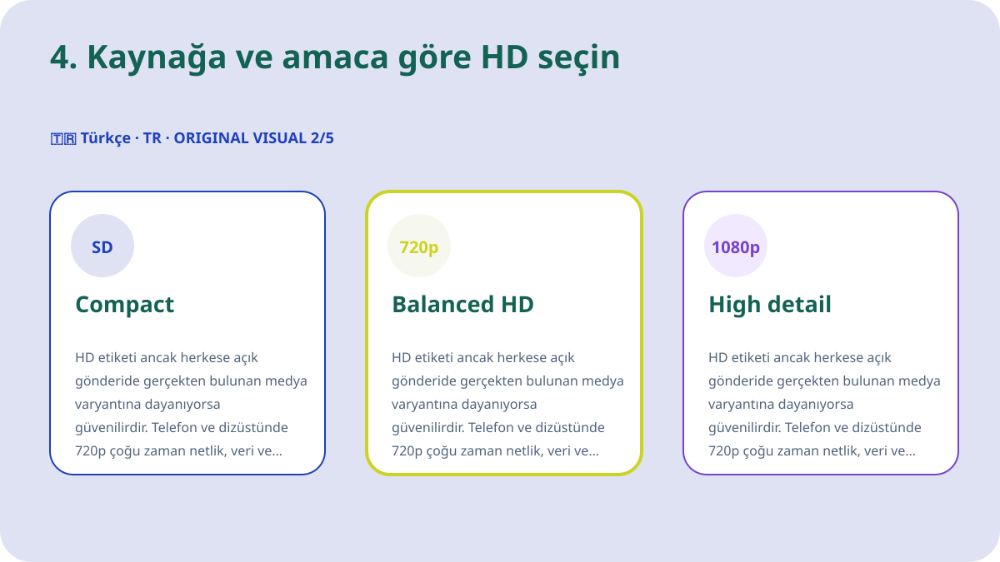
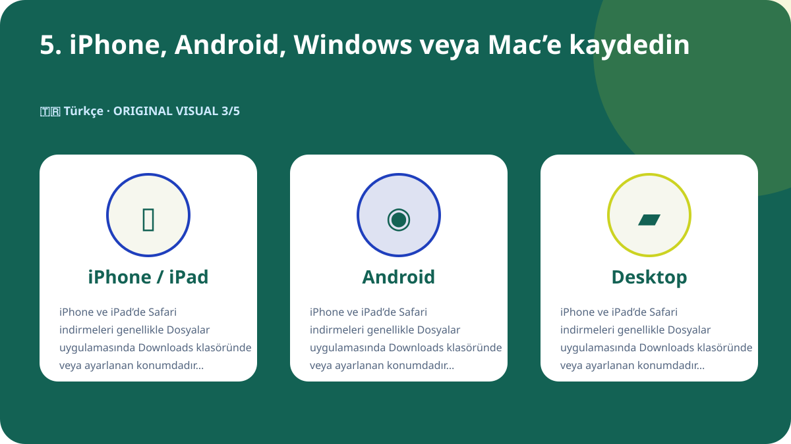
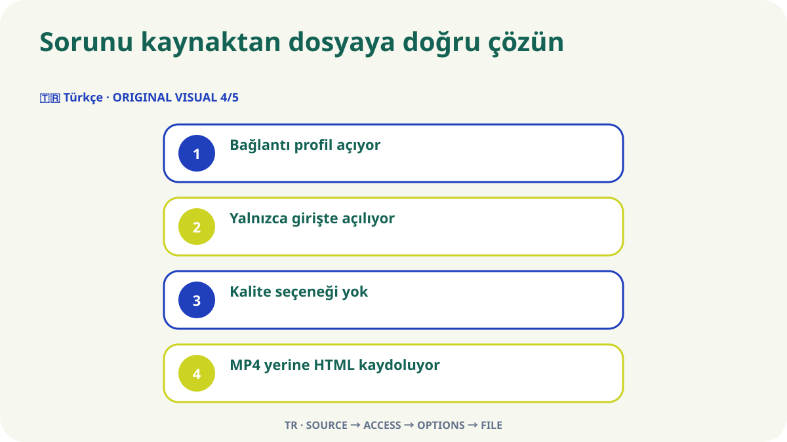

Kısa cevap
Videoyu içeren tekil X gönderisini açın, herkese açık olduğunu doğrulayın ve Paylaş menüsünden gönderi bağlantısını kopyalayın. URL’yi Downloader-X’e yapıştırın, sonuçta gerçekten görünen MP4 seçeneğini seçin ve kaydettikten sonra başını, ortasını ve sonunu oynatın. Bu yöntemi yalnızca size ait, uygun lisanslı veya sahibinden açık izin aldığınız videolarda kullanın. Herkese açık bağlantı işlemi X şifresi, doğrulama kodu, tarayıcı çerezi ya da uzaktan erişim istememelidir.

1. Herkese açık erişimi ve kullanım hakkını kontrol edin
Profil, arama sonucu, ekran görüntüsü veya iletilmiş önizleme yerine özgün gönderiden başlayın. URL’yi yeni sekmede açıp hesap, metin, küçük resim ve süreyi karşılaştırın. Herkese açık görünürlük yalnızca mevcut erişimi ifade eder; yeniden paylaşma, düzenleme, satma veya reklamda kullanma iznini otomatik vermez. Hesap korumalıysa, gönderi silinmişse, özel giriş ya da kısıtlama gerekiyorsa kontrolü aşmayın ve sahibinden izinli kopya isteyin.
Telif, onay ve atıf
Herkese açık görünürlük erişim ayarıdır, lisans değildir. Kendi videonuzu, uyumlu lisanslı medyayı veya açık izinli içeriği kaydedin. Yeniden yayın, düzenleme veya ticari kullanım için iznin amacı kapsadığını doğrulayıp yazılı kanıt saklayın. Videodaki kişilere, özel bilgilere, hassas yerlere ve çocuklara saygı gösterin ve başkasının çalışmasını kendinizinmiş gibi sunmayın.
2. Gönderinin kesin URL’sini kopyalayın
Bağlantı videoyu içeren tek bir gönderiyi göstermelidir. X’te Paylaş menüsünü açıp gönderi bağlantısını kopyalayın ve yeni sekmede bir kez sınayın. Profil veya zaman akışı URL’si birden fazla gönderi içerir ve hedef medyayı belirtmez. Bu kısa kontrol yanlış adres ile hizmet arızasını ayırır ve eksik ya da yinelenen dosya oluşturan tekrar tıklamaları azaltır.
- Özgün video gönderisini tekil sayfasında açın.
- URL’yi elle yazmak yerine Paylaş ile bağlantıyı kopyalayın.
- x.com veya twitter.com alanını ve gönderi adresini doğrulayın.
- Yeni sekmede hesap, metin, küçük resim ve videoyu karşılaştırın.
- Kaynak URL ile izin kanıtını dosyayla birlikte saklayın.
3. Bağlantıyı yapıştırın ve yalnızca gerçek sonucu seçin
Doğrulanan URL’yi X indiriciye yapıştırın ve işlemi bir kez başlatın. Gerçek seçenekleri bekleyip başlık veya önizlemeyi özgün gönderiyle karşılaştırın. Yalnızca sonuçta fiilen gösterilen biçim ve çözünürlükleri seçin. Kaynak sunmuyorsa 4K, 1080p veya filigransız iddiasını gerçek seçenek saymayın. Hata olduğunda açık mesaj görünmeli; HTML sayfası, kurulum dosyası veya yanlış dosya başarılı video gibi sunulmamalıdır.
Özgün Türkçe gösterim videosu
Bu video yalnızca bu sayfa için, diğer dillerden farklı görseller, renkler ve metinlerle oluşturuldu.
4. Kaynağa ve amaca göre HD seçin
HD etiketi ancak herkese açık gönderide gerçekten bulunan medya varyantına dayanıyorsa güvenilirdir. Telefon ve dizüstünde 720p çoğu zaman netlik, veri ve depolama dengesi sağlar; 1080p kaynak gerçekten sunduğunda ve büyük ekranda ayrıntı gerektiğinde uygundur. Aynı çözünürlükteki iki dosya bitrate, codec ve sıkıştırma nedeniyle farklı görünebilir; adı yerine oynatmayı kontrol edin. Ses gerekliyse video ve ses içeren birleşik seçeneği seçin ve kayıttan sonra izi doğrulayın.

5. iPhone, Android, Windows veya Mac’e kaydedin
iPhone ve iPad’de Safari indirmeleri genellikle Dosyalar uygulamasında Downloads klasöründe veya ayarlanan konumdadır. Android’de tarayıcı indirme listesine veya Files uygulamasına bakın. Windows, macOS, Linux ve ChromeOS’ta yeniden tıklamadan önce Downloads klasörü ile tarayıcı geçmişini kontrol edin. Alan azsa gereksiz kopyaları silin veya düşük çözünürlük seçin. Bir sayfa zorunlu dedi diye bilinmeyen yönetici ya da eklenti kurmayın.

6. Kaydedilen dosyayı doğrulayın
İş, ilerleme çubuğu kaybolunca değil dosya gerçek video olarak açılınca biter. Arşivleme veya paylaşmadan önce kontrol edin:
- Dosya türü MP4 gibi seçime uyar ve HTML ya da kurulum değildir.
- Boyut sıfır değildir ve süre ile kaliteye göre makuldür.
- Baş, orta ve son görüntü, süre ve sesi doğru oynatır.
- Ad, klasör, kaynak URL ve izin belgelenmiştir.
Uzun süre saklamadan önce kaynağı belgeleyin
Birden fazla klipte hesap, tarih, kalıcı URL, kısa açıklama, seçilen varyant, boyut ve izin dayanağını kaydedin. Böylece kaynaksız dosya kalmaz ve kredi ya da lisans sonradan incelenebilir. Alıntı gönderi, yanıt veya dizide videoyu gerçekten içeren gönderinin URL’sini alın; yalnızca ondan söz eden gönderiyi değil.
Sorunu kaynaktan dosyaya doğru çözün

Bağlantı profil açıyor
Video gönderisine dönüp Paylaş ile URL’yi kopyalayın; profil tek medyayı belirtmez.
Yalnızca girişte açılıyor
İçerik korumalı veya sınırlı olabilir. Kimlik bilgisi ya da çerez vermeyin; izinli kopya isteyin.
Kalite seçeneği yok
Gönderinin durduğunu, yerel video içerdiğini ve URL ile açıldığını kontrol edip bir kez yenileyin.
MP4 yerine HTML kaydoluyor
Dosyayı silin, uzantıyı değiştirmeyin ve URL ile gerçek video seçeneğini yeniden kontrol edin.
Videoda ses yok
Kaynak, cihaz sesi ve başka güvenilir oynatıcıyı deneyin; gerekirse birleşik varyant seçin.
Güvenlik ve gizlilik
Herkese açık bağlantı akışı X şifresi, iki aşamalı kod, dışa aktarılan çerez, uzaktan kontrol, çalıştırılabilir kurulum ya da cihaz korumasını kapatma gerektirmez. .exe, .dmg veya ilgisiz eklenti sunulursa durun. Açmadan önce alan adı, tür ve kaynağı doğrulayın. Ortak cihazda izinli dosyaları genel klasörden taşıyın ve gereksiz geçici kopyaları silin.
Dosyaları düzenleyin ve yineleneni önleyin
Dosya adına kısa konu, hesap, tarih ve kalite ekleyin; örneğin topic_creator_2026-08-30_720p.mp4. Geçici ve doğrulanmış klasörleri ayırıp yalnız gereken varyantları tutun. Tekrar tıklamak kaliteyi artırmaz; genellikle kopya veya kısmi dosya üretir. Kaynak URL, kredi ve kullanım koşullarını proje notu ya da tablosunda saklayın.
Son 60 saniye kontrolü
- URL doğru video gönderisini açıyor.
- Gönderi kontrol aşmadan herkese açık.
- Sahipsiniz veya kaydetme izniniz var.
- Hizmet kimlik bilgisi ya da çerez istemiyor.
- Seçilen kalite gerçek sonuçta görünüyor.
- Cihazda yeterli alan var.
- Dosya türü ve boyutu makul.
- Görüntü ve ses tamamen oynuyor.
- Kaynak ve kredi kayıtlı.
- Sonraki kullanım izin sınırında.
Sık sorulan sorular
x.com ve twitter.com bağlantıları çalışır mı?
Aynı herkese açık gönderiyi açıyor ve hedef doğrulandıysa evet.
1080p neden her zaman yok?
Çözünürlük kaynak dosyaya ve gerçekten mevcut varyantlara bağlıdır.
Korumalı hesaptan indirilebilir mi?
Hayır. Bu rehber yalnızca herkese açık gönderiler içindir ve kısıt aşmaz.
iPhone’da dosya nerede?
Genellikle Dosyalar uygulamasında Downloads veya Safari’de seçilen konumdadır.
HTML gelirse ne yapılır?
Silin, yeniden adlandırmayın ve URL ile video seçeneğini tekrar kontrol edin.
Herkese açık gönderi hemen yeniden paylaşılabilir mi?
Hayır. Yeniden dağıtım ve amaç için lisans veya izin gerekir.
Diğer diller ve ilgili rehberler
Doğrulanmış herkese açık URL ile başlayın
Doğru bağlantıyı yapıştırın, yalnız mevcut kaliteyi seçin ve kullanmadan önce dosyayı doğrulayın.
X için Downloader-X kullan